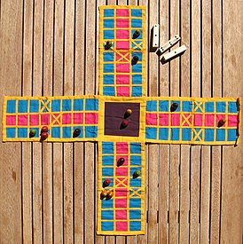

Home
Пачиси
Пачиси (хинди पचीसी; от «пачис» — «двадцать пять») — настольная игра, появившаяся в Индии более 4000 лет назад. Представляет собой игровое поле в виде
креста, по которому игрок перемещает фишки. Количество клеток, на которые перемещается фишка,
определяется броском пяти, шести или семи раковин каури. Считается национальной игрой Индии.
Первые описание и игровые принадлежности пачиси датируются по индийским источникам и результатам археологических раскопок третьим
тысячелетием до нашей эры. Исключение составляет игровое поле, современный вид которого известен не ранее чем с XVI века. Более поздние
предметы, которые можно рассматривать в качестве игрового поля пачиси, также известны с третьего тысячелетия до нашей эры, но отличаются по форме: это могут быть
как изображённое на камне поле, так и рисунок, выполненный на ткани.
Одной из версий игры, имеющей столь же древнее происхождение, является чаупар.
Название игры происходит от слова «пачис», означающего на хинди «двадцать пять». Это число — максимально возможное количество очков, которые можно заработать за один бросок
в традиционном варианте игры.
В других вариантах игры количество очков может быть больше.
